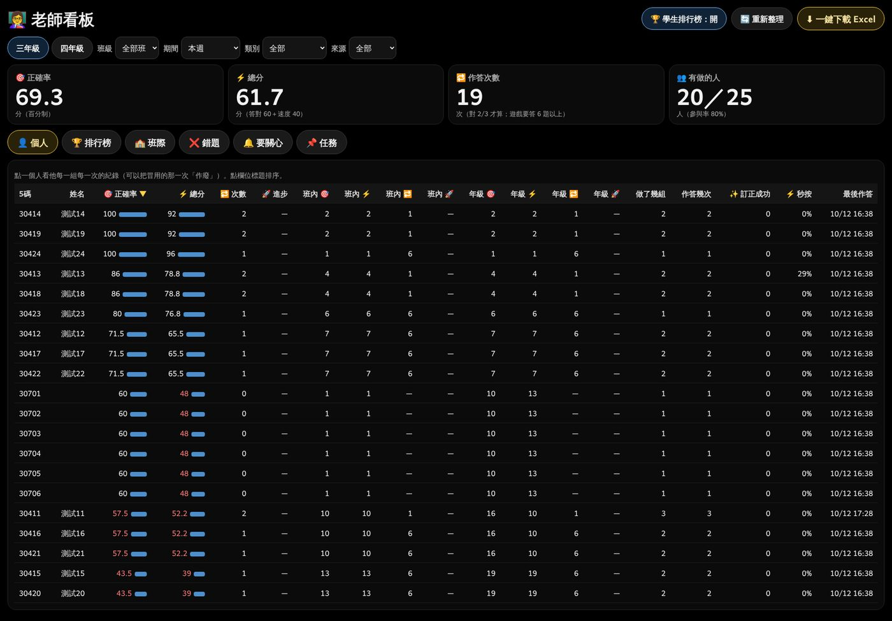
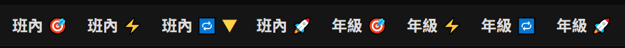
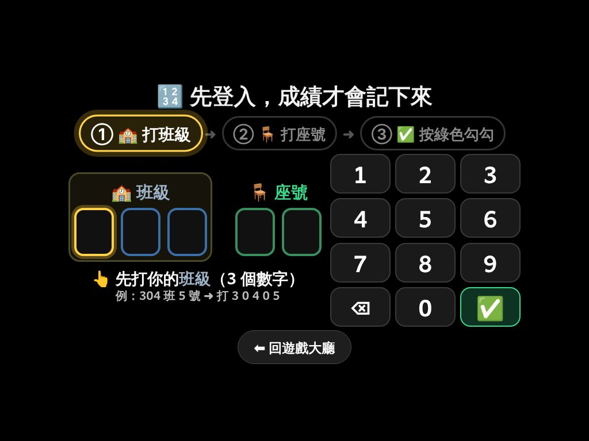
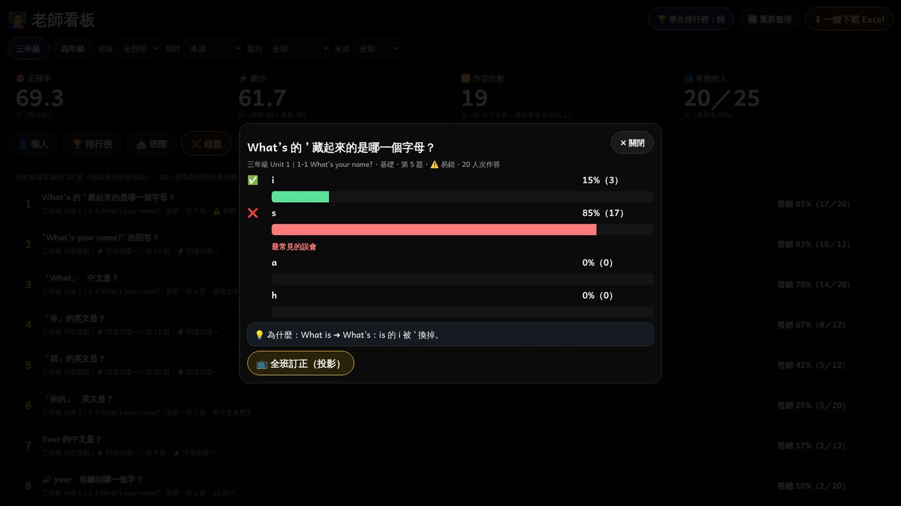

🏆 成績系統大改版（D 組）：動手前請老師選
老師說的 7 點＋之前說過的（學生登入、老師看板、錯題分析），我先把現在的畫面打開、量了字的大小，下面一題一題請老師選。
✍️ 怎麼回答：在對話裡打「D1 A、D2 A、D3 A……」就好。
綠框 ＋ 建議 ＝ Claude 建議的。全部照建議 ➜ 打「全部照建議」，有不同的再寫那一題。
先看：現在的樣子（量出來的）
| 畫面 | 現在的字 | 問題 |
|---|
| 老師看板 👤 個人 | 16px | 98% 的字小於 20px；一張表 19 欄 |
| 老師看板 說明文字 | 14px | 太小 |
| 總首頁 | 12～39px | 沒有老師看板的入口 |
| ❌ 錯題 清單 | 17px | 聽力題直接寫出答案：「🔊 your 你聽到哪一個字？」➜ 會改掉（不用選） |

↑ 現在的〔👤 個人〕：字小、欄太多、「班內 🎯」「班內 🔁 🔽」看不懂。
一、總首頁放老師看板（第 3 點）
D1 〔老師看板〕按鈕放在總首頁哪裡？
D2 學生也看得到這顆按鈕，要不要擋？
D3 老師的電腦要不要記住密碼（不用每次打）？
➜
👩🏫 老師看板
● ● ● ● ● ●
☑ 這台電腦記住我（7 天）
🔓 進入
二、圖示換成秒懂的、字放大（第 4、6 點）
D4 每一個圖示換成什麼？

| 現在 | 意思 | 改之後（A） |
|---|
| 🎯 | 正確率 | 🎯 正確率（不變，老師看得懂） |
| ⚡ | 總分（答對 60 ＋ 速度 40） | 💯 總分 |
| 🔁 | 次數（對 2/3 才算 1 次） | ✅ 合格次數 |
| 🚀 | 進步（這次比上次多幾分） | 📈 進步 |
| 🔽 | 不是成績：這一欄正在排序，由大到小 | 欄位標題變金色底＋「⬇ 高的在上面」 |
| 班內 🎯 | 在本班第幾名（正確率） | 🥇 本班第幾名 |
| 年級 🎯 | 在全年級第幾名 | 🏆 全年級第幾名 |
| ⚡ 秒按 | 1 秒內就按（還沒看完題目）＝ 不好 | ⚠️ 太快亂按（紅字） |
D5 字和圖示放多大？
| 哪裡 | 現在 | A（建議） | B（更大） |
|---|
| 表格、名單 | 16px | 28px | 34px |
| 說明文字 | 14px | 24px | 28px |
| 分頁按鈕 | 19px | 30px | 34px |
| 大數字 | 48px | 72 | 88 |
| 圖示 | 17px | 🎯 | 🎯 |
另外：右上角加〔A＋〕〔A－〕，老師可以自己再放大（記在這台電腦）。
三、〔👤 個人〕秒懂（第 5 點）
D6 個人表留幾欄？
| 座號 姓名 | 🎯 正確率 | 💯 總分 | ✅ 次數 | 📈 進步 | 🥇 本班 | 燈號 |
|---|
| 30414 王小明 | 100
| 92 | ⭐⭐ | ⬆ 12 | 🥇 1 | 🟢 |
| 30415 林小華 | 43
| 39 | ⭐ | — | 13 | 🔴 |
（名字是示範用的假名字）
D7 點一個學生 ➜ 看到什麼？（可以選好幾個，打「D7 ①②③…」）
| # | 內容 | 畫成什麼 |
|---|
| ① | 四個大數字 | 正確率、總分 ＝ 圓圈儀表從 0 轉上去；次數 ＝ 星星一顆一顆跳出來；進步 ＝ 綠色箭頭往上跳（退步不寫負數，寫「再加油」） |
| ② | 最強的 3 組／要加油的 3 組 | 兩欄：💪 綠色長條（最高的 3 組）｜🌱 橘色長條（最低的 3 組） |
| ③ | 這週哪幾天有練 | 月曆格子：一 二 三 四 五 六 日，有練的那天亮綠燈 ✅ |
| ④ | 每一組的變化 | 折線圖放大（點變大、每個點上面寫分數），一次只看一組，左右切換 |
| ⑤ | 他最常錯的 3 題 | 題目＋他選的 ❌＋正確答案 ✅（老師可以直接跟他講） |
| ⑥ | 👆 用心程度（D17） | 五顆小電池，充到幾格就是幾分 |
| ⑦ | 每一次作答的明細表 | 放在最下面〔📋 看全部明細〕（作廢在這裡） |
四、🏆 榮譽榜（第 7 點）
先看研究：怎樣的表揚真的有用？（每一篇都打開原文核對過）
| 研究 | 發現 | 所以榮譽榜要… |
|---|
Deci 等 1999（128 個實驗）
doi.org/10.1037/0033-2909.125.6.627 | 口頭的肯定會提高學習動機；事先不知道的獎勵不會傷害動機 | ✅ 每一次風格都不一樣、事先不知道 ＝ 驚喜 |
Henderlong & Lepper 2002
doi.org/10.1037/0033-2909.128.5.774 | 表揚要真誠、稱讚自己做得到的事（努力、方法），不要只靠跟別人比 | ✅ 獎狀寫「你很用心、練了 5 次」
✅ 也頒「進步之星」 |
Mueller & Dweck 1998（五年級）
doi.org/10.1037/0022-3514.75.1.33 | 被稱讚「聰明」的孩子，失敗後比較會放棄；被稱讚「努力」的比較會堅持 | ✅ 不寫「最聰明」，寫「最用心」「最努力」 |
Sailer & Homner 2020（遊戲化統合分析）
doi.org/10.1007/s10648-019-09498-w | 有效；競爭＋合作一起、加上故事情境，效果最好 | ✅ 一定要有「班級榮譽」（全班一起）
✅ 動畫要像頒獎典禮（有故事） |
| Bursztyn & Jensen 2015（高中生） | 公開排名讓有些前段學生怕被同學看到，反而不努力 | ⚠️ 投影要不要姓名，老師決定（D10） |
D8 〔🏆 榮譽榜〕按鈕放在哪裡？
🎯 正確率💯 總分✅ 次數📈 進步
📊 排行榜🏆 榮譽榜
↑ 每一種榜上面一顆〔📊 排行榜｜🏆 榮譽榜〕切換：按 🏆 ➜ 蓋上整個畫面演榮譽榜
D9 榮譽榜演誰？
| 幕 | 演什麼 |
|---|
| ① | 開場：「本週 🎯 正確率 榮譽榜」大字＋燈光 |
| ② | 第 10 名 ➜ 第 4 名：一個一個上台，每人一面獎牌＋一句稱讚 |
| ③ | 第 3、2、1 名：頒獎台升起，獎盃最大，第 1 名最後揭曉 |
| ④ | 📈 進步之星（進步最多的 3 人，不在前 10 名也上得了） |
| ⑤ | 結尾：全班合照「🏫 304 班 這週一起練了 85 次！」 |
每一種榜一個獎名：🎯 正確率 ＝「🎯 精準獎」、💯 總分 ＝「💯 高分獎」、✅ 次數 ＝「💪 勤練獎」、📈 進步 ＝「🚀 進步之星」、🏫 班際 ＝「🏫 榮譽班級」。
獎名要改的話，D9 後面寫上新名字。
D10 投影的榮譽榜要不要中文姓名？
D11 「每一次都不同」：做幾種、怎麼換？ 👇 點一下可以重播
↑ 這只是小樣品（真的會是整個螢幕、更精緻）。12 種風格：
① 🏆 金色獎盃從天而降＋光芒
② 👑 皇冠加冕＋星光
③ 🥇 奧運頒獎台升起＋升旗
④ 🎆 煙火大會（名字在煙火裡出現）
⑤ 🌟 紅毯＋聚光燈＋閃光燈
⑥ 🏅 金牌鑄造（熔金倒進模子）
⑦ 📜 皇家獎狀（展開卷軸＋蓋大印）
⑧ 🚀 火箭升空（名字寫在星空）
⑨ 💎 寶箱打開（寶石噴出來）
⑩ 🌠 流星雨（每一顆流星一個名字）
⑪ 🐉 神龍守護（金龍繞著獎盃）
⑫ 🏛 名人堂（名字刻上大理石牆）
D12 榮譽榜要不要聲音？
D13 頒哪一段期間的獎？
D14 要不要印獎狀？
🏆 榮譽獎狀
304 班 14 號 王小明（示範）
🚀 進步之星
這週你練了 5 次，正確率進步 12 分。
你的用心看得見！
2026 年 10 月 12 日
五、學生登入（第 1 點：之前說過的）
已經決定的（2026-10-10，不用再選）
| ① | 學生會打開的每一個首頁最上面：沒登入 ＝ 大字「先登入」；登入了 ＝ 大字「這是你嗎？40415 ✅ 是／🚪 不是，登出」 |
| ② | 每次打開網站先問「這是你嗎？」＋ 3 分鐘沒動作自動登出 |
| ③ | 每一個題目、遊戲做完都提醒「🚪 記得登出」並說原因（下一個人才不會用你的號碼） |
| ④ | 登出、登入按鈕放大；一鍵登出、原地馬上登入 |

↑ 現在的登入（2026-10-09 改過，這次再加 ①～④）
D15 「3 分鐘沒動作自動登出」在家也算嗎？
注意：作答中、遊戲中（還在點）不算「沒動作」；題目、遊戲做到一半不會被登出。
六、老師〔🔒 開關〕一鍵完成（之前說過的）
D16 開關長這樣可以嗎？
班級：✅ 全年級402406
🔓 全部開🔒 全部鎖
🔓 Unit 1 句型🔓 Unit 1 複習題🔒 Unit 2 句型🔓 ⚡ 閃電四選一🔒 👑 魔王挑戰
綠色 ＝ 開 🔓；紅色 ＝ 鎖 🔒；按一下立刻換顏色＋出現「✔ 存好了」
七、👆 用心程度 100 分（之前說過的）
D17 用心分數怎麼算？
| 項目（各 20 分） | 怎樣拿滿分 | 證據 |
|---|
| 📅 隔天再練 | 這週有 4 天以上練習 | 分好幾天練記得比較久（Cepeda 2006） |
| 📝 自己考自己 | 這週合格 5 次以上（複習題＋遊戲） | 考自己比再看一次記得牢（Roediger 2006） |
| 🐢 不亂按 | 太快亂按 0%（每多 5% 扣 4 分） | Wise & Kong 2005 |
| ✨ 訂正成功 | 答錯的題目，後來都改對了 | Hattie & Timperley 2007 |
| ⏱ 真的在練的分鐘數 | 這週 30 分鐘以上（開著不動不算）；看字卡、按聆聽也算進來 | Fredricks 2004 |
（證據 2026-10-10 列過，動手前會逐條打開原文核對，核對不過的不放）
八、❌ 錯題分析（第三批 D）
D18 看不懂的字眼換成什麼？

| 現在 | A（建議） | B |
|---|
| 最常見的誤會 | 👥 最多人選的錯答案 | 😵 最多人搞錯的 |
| 「she」 哪一個唸的是它？ | 👀 she 🔊 聽 1～4：哪一個是 she？ | 🔊 哪一個在唸「she」？ |
| 🔊 聽 1～4，哪一個唸的是它？ | 🔊 聽 1～4：哪一個是上面這個字？ | 🔊 哪一個聲音跟上面一樣？ |
不用選、一定會做的：題目、選項、每一步的字和圖示放大（坐最後一排看得到）；一步一步的動畫引導學生想；最後一步正確答案唸的時候每唸一次放大變亮一次；正確答案每個英文字正下方寫中文；聽力題附上聽力檔（〔🔊 再聽一次〕）；清單裡的聽力題不再寫出答案。
做的順序（老師回答以後，一次做一件，每一件做完量測 0 失敗才上線）
| 1 | 總首頁〔老師看板〕 | 6 | 學生登入（這是你嗎、3 分鐘、提醒登出） |
| 2 | 老師看板放大＋圖示 | 7 | 〔🔒 開關〕 |
| 3 | 👤 個人成績卡 | 8 | 👆 用心程度 |
| 4 | 🏆 榮譽榜 | 9 | ❌ 錯題分析 |
| 5 | 🔔 要關心（每班照座號一格一格） | | |
第 4、6、7、8 件會改到 Google 那一邊的程式：做完會給老師大字版的更新步驟網址，老師重新部署一次（網址不變）。
第 5 件的樣子（老師第二批 4(3) 指定：每一班照座號一格一格）：
30401
王小明
30402
陳小美
30403
林小華
30404
李大同
30405
張小強
30406
黃小芳
🟢 很好 🟡 要注意 🔴 要關心 ⚪ 一次都沒做（示範用假名字）
✍️ 在對話裡回答：「全部照建議」，或「D1 A、D2 B、……」